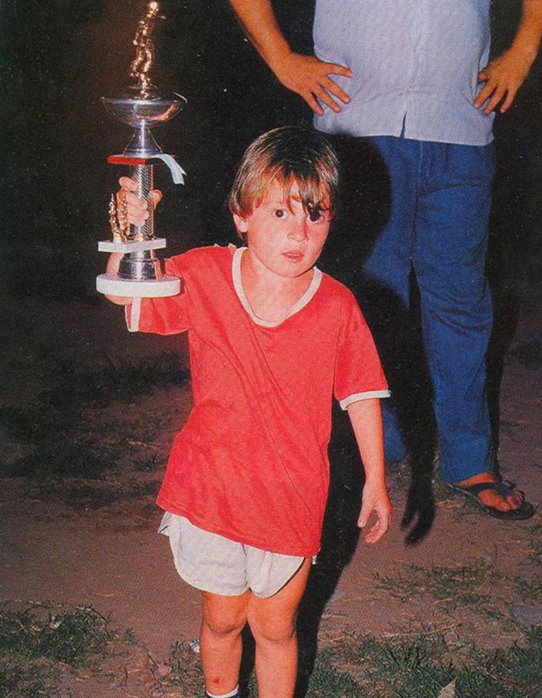

Lionel Andrés Messi Cuccittini nació el 24 de junio de 1987 en Rosario, Santa Fe, Argentina. Su peso al nacer fue de 3 kilos y midió 47 centímetros. Tiene ascendencia italiana; su bisabuelo paterno llegó a Argentina en 1883. Criado en el seno de una familia humilde, es hijo de Jorge Horacio Messi, trabajador de una fábrica, y de Celia María Cuccittini, una limpiadora a media jornada. Tiene dos hermanos y una hermana. De niño jugó fútbol callejero con sus hermanos, Matías y Rodrigo, y también con su primo Tomi. Le apodaron la pulga por su baja estatura.
El niño que se apasionaba por el fútbol y lo daba todo en el campo, no mostraba esa misma concentración y capacidad en la escuela. De hecho, el mismo Messi ha reconocido que, aunque en el colegio era muy tranquilo, era un desastre en los estudios, por lo que siempre sacaba pésimos resultados. En realidad, era bastante bueno en geometría, una materia que podía aplicar en el campo de juego, pero cuando se trataba de aritmética, álgebra o cualquier otra ciencia que no tuviese que ver con el fútbol, los resultados eran mediocres, aunque siempre supo ganarse el cariño de las maestras. Según cuenta su mejor amiga de la infancia, Cintia Arellano, le pasaba a Lionel sus apuntes para que pudiera tomar las notas de clases. Sin embargo, su ayuda no fue suficiente para que Messi mejorara sus hábitos de estudio. Obviamente, sus dificultades académicas les dieron no pocos dolores de cabeza a sus padres.
A los 11 años de edad a Lionel le diagnosticaron una alteración en las hormonas del crecimiento. Sus padres se dieron cuenta porque no crecía a un ritmo normal y decidieron consultar a un médico. Las pruebas desvelaron que Messi tenía una disfunción hormonal que retrasaba su crecimiento óseo. Sin embargo, lo que para muchos niños deportistas podría haber significado el fin de su carrera, para Lionel Andrés Messi no fue así. Se aferró al balón y siguió adelante. Obviamente, no fue una etapa fácil, ni para el niño ni para sus padres.
El tratamiento costaba mucho más de lo que el presupuesto familiar podía permitirse pero después de solicitar la contribución de diferentes clubes y fundaciones deportivas, los padres decidieron buscar nuevos horizontes. Así llegaron a España y el Fútbol Club Barcelona fichó a Lionel, dándole su primer contrato profesional.Aún así, todo no estaba resuelto. Messi tuvo que quedarse solo en un país que le resultaba ajeno mientras su familia regresaba a Argentina. De hecho, según revela el propio futbolista, fueron momentos muy difíciles en los que se sentía desorientado y triste. Sin embargo, su voluntad y persistencia volvieron a salir a la luz e hicieron que no cejara en su empeño. Hoy Messi afirma que aquel problema le hizo convertirse en una persona más fuerte, templó su carácter y le permitió ser el excelente jugador que es hoy. Le ayudó a proponerse nuevas metas, a no tener miedo y a ser más exigente y responsable en otras esferas de su vida.
Sus hermanos cuentan que de niño apenas se podía desprender del balón, lo llevaba lo mismo cuando tenía que hacer recados que mientras estaba con sus amigos.
Con tan solo 4 años, jugó su primer partido de fútbol. Fue Ricardo Aparicio, el director de un club infantil de fútbol que entrenaba cerca de la casa de Messi, quien lo vio lanzando el balón y lo invitó a entrar al terreno. A partir de este momento, la afición de Messi se convertiría en una pasión desenfrenada.
El pequeño intentaba jugar en todos los partidos, sin importar si se trataba de un amistoso o una competencia entre clubes infantiles.
Lo importante para Lionel era estar en el terreno y jugar lo mejor posible. Sin embargo, esa perseverancia que desplegaba en el campo de fútbol, no se apreciaba en otras esferas de su vida, así que los problemas no tardaron en aparecer. Con cinco años se inició en el Grandoli, un pequeño equipo de su barrio que entrenaba su padre. En 1995, pasó a entrenarse en las categorías inferiores de Newells Old Boys, club con el que ganó la Copa de la Amistad de Perú en 1997.
| Equipo (Newell`s) | Año | Partidos | Goles | Promedio | ||||||||||||||||||||||||||||||||||||||||
|  | 1994 | 29 | 40 | 1.38 | ||||||||||||||||||||||||||||||||||||||||
| 1995 | 30 | 36 | 1.2 | |||||||||||||||||||||||||||||||||||||||||
| 1996 | 27 | 36 | 1.33 | |||||||||||||||||||||||||||||||||||||||||
| 1997 | 36 | 40 | 1.11 | |||||||||||||||||||||||||||||||||||||||||
| 1998 | 25 | 27 | 1.08 | |||||||||||||||||||||||||||||||||||||||||
| 1999 | 29 | 55 | 1.9 | |||||||||||||||||||||||||||||||||||||||||
| Total | 176 | 234 | 1.33 | |||||||||||||||||||||||||||||||||||||||||
Leo Messi fue descubierto por el Fútbol Club Barcelona. Dejó el Club Atlético Newells Old Boys de Rosario para trasladarse a Europa junto con su familia, donde el club azulgrana le costeó los gastos de su enfermedad hormonal (900 USD por mes). Durante varios años recibió diariamente dos inyecciones de la hormona de crecimiento ayudándolo a crecer 23 centímetros. Finalmente, llegó a alcanzar los 1,70 centímetros de estatura y gasta una talla 40 de pie. Messi formó parte de los equipos menores del Barcelona entre 2000 y 2005.56 Debutó en un partido con el Infantil B de Xavi Llorens ante el Amposta, el 7 de marzo de 2001, en el que anotó un gol,57 pero en el siguiente partido, se fracturó el peroné izquierdo en una acción fortuita con un rival del Ebre Escola Esportiva,58 lo que no pudo jugar el resto de la temporada 2000-2001. La temporada 2004-2005 la disputó con el Barcelona B y el primer equipo, alternando partidos en Segunda División B y Primera División.
| Club (FC Barcelona) | División | Temporada | Partidos | Goles | Promedio | ||||||
 |
Infantil B | 2000-2001 | 2 | 1 | 0.5 | ||||||
| Infantil A | 2001-02 | 14 | 21 | 1.5 | |||||||
| Cadete B | - | - | - | ||||||||
| Cadete A | 2002-03 | 30 | 37 | 1.23 | |||||||
| Juvenil B | 2003-04 | 7 | 4 | 0.57 | |||||||
| Juvenil A | 21 | 31 | 1.48 | ||||||||
| Barcelona C | 10 | 5 | 0.5 | ||||||||
| Barcelona B | 6 | 0 | 0 | ||||||||
| 2004-05 | 17 | 6 | 0.35 | ||||||||
| Total | 107 | 105 | 0.98 | ||||||||
Con su selección, en 2002, Jorge Messi le hizo llegar a Hugo Tocalli, responsable de las divisiones juveniles de Argentina, un video compilatorio de las jugadas de su hijo. A pesar de reconocer las cualidades del adolescente, el entrenador le respondió que no podría incorporarlo al plantel, porque ya tenía definido el equipo para el Mundial del año siguiente en Finlandia, pero que lo tendría en cuenta para otra competición. En 2003, sin embargo, y aunque sabía que la Federación Española de Fútbol quería ficharlo para su seleccción, tampoco lo convocó para el Mundial Sub-20 en Emiratos Árabes.
El 30 de marzo de 2004, se reunió con el presidente de la AFA, Julio Grondona y, siguiendo una sugerencia de José Pékerman (quien había visto a Messi contra el Alcorcón), le propuso organizar un encuentro amistoso para impedir toda posibilidad de que jugara para España. En abril, finalmente, Messi recibió una citación por fax para un entrenamiento en junio en Ezeiza. El jugador ya había declinado, alrededor de 2003, reiteradas ofertas de jugar para España, porque quería representar a su país.
| Categorías Inferiores | |||
| Competición | Goles | Asistencias | Logros |
| Sudamerincano Sub-20(2005) | 5 | 0 |
|
| Mundial Sub-20(2005) | 6 | 2 | |
| Juegos Olímpicos | 2 | 3 | Campeón de los Juegos Olímpicos |